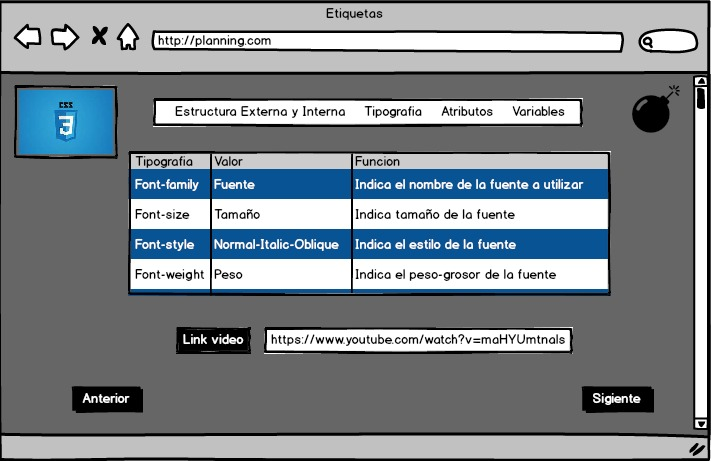
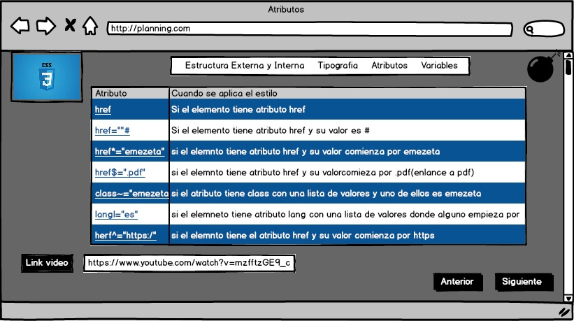
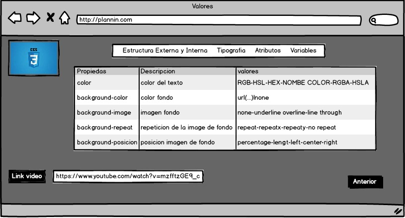

Cordial saludo
Tutor y compañeros de curso de diseño web
En el presente OVI vamos a abordar de manera detallada del tema de los estilos internos,externos y selectores de CSS3 con sus styles de columnas, etiquetas y atributos.
Estilo de estrectura interna al HTML que creamos ya que con esta podemos,
unir el CSS al css cn la etiqueta style y dar estilo al mismo html.
Una hoja de estilo externa se realiza con la etiqueta "link rel="stylesheet" type="text" y si guardan el fichero de stylos en la misma carpeta agregan href="nombre".
continuación presentaremos 16 de las etiquetas más utilizadas:

Los atributos son las propiedades de las etiquetas a continuación veremos los atributos selectores:

A cada propiedad se le pueden asignar valores por tal motivo entre atributos y valores siempre deben estar unidos por el signo = y los valores deben estar entre comillas, a continuación veremos algunos casos de su uso:
